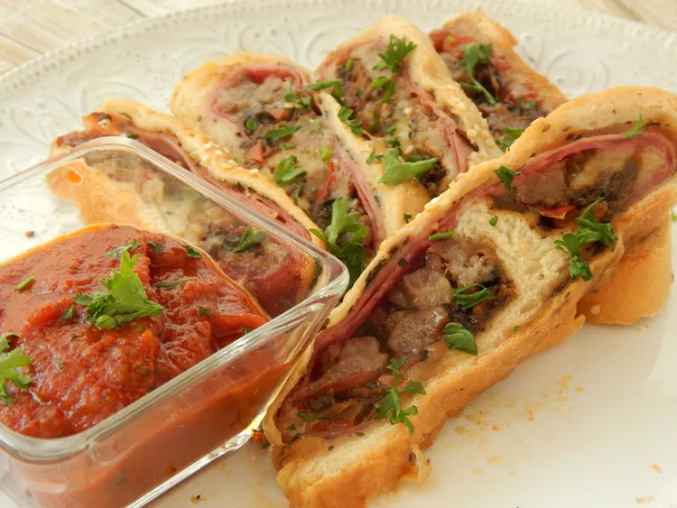

back to Home
Back Ribs

Ingredients
- 1 (1 pound) loaf frozen bread dough, thawed
- 1 tablespoon olive oil, or to taste
- 1 teaspoon dried oregano
- 1 teaspoon dried basil
- 16 slices mortadella
- 12 slices provolone cheese
- 12 thin slices capicola ham
- 12 slices Genoa salami
- 1 ½ cups sliced Roma tomatoes (Optional)
- 1 ½ cups thinly sliced fresh mushrooms (Optional)
- 1 egg, beaten
- 2 tablespoons sesame seeds (Optional)
Directions
- Place dough in a large bowl. Cover with plastic wrap and
et rise in a warm place until doubled in size, 45 minutes
to 1 hour.
- Roll dough into a 17x20-inch rectangle about 1/4-inch thick
on a large piece of parchment paper. Brush olive oil over dough;
sprinkle basil and oregano on top. Layer mortadella, provolone
cheese, capicola ham, Genoa salami, tomatoes, and mushrooms over
dough.
- Roll dough lengthwise into a log. Brush the top with beaten egg;
sprinkle sesame seeds on top. Transfer to a baking sheet. Cover
with plastic wrap and let rise until puffy, about 30 minutes.
- Preheat the oven to 300 degrees F (150 degrees C).
- Bake in the preheated oven until golden brown, about 45 minutes.
Let cool for 5 minutes before slicing.
Nutrition |
Facts |
(per serving) |
| 807 |
52g |
| Calories |
Fat |
| 42g |
41g |
| Carbs |
Protein |